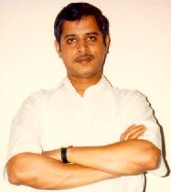

WEEKEND THOUGHTS # 10

Namaskar,
This week we are again fortunate to have a very philosophical article for the Weekend Thoughts column. The author is: Dr. Markandeswar Panda of San Antonio. Dr. Panda looks at life and wonders if there is something we can learn from the life experiences of some "great men". The author has made a very good scrutiny of the human heart and human life. Here is the article for you. The reviews are by Arati Nanda of Austria and Amitabh Mishra.
Regards,
Markandeswar Panda
Senior Research Associate
Department of Biochemistry
University of Texas Health Science Center
San Antonio, TX 78284-7760.
Family: Bidyut Prava (wife)
Shantayan (son, 13 yrs., 9th grade)
Shree Lekha (daughter, 5 yrs.)
Birth Place: Goudagaon in Ganjam Dist., Orissa.
Parents live in Khallikote, Ganjam.
Education & Training:
M. Sc. (Chemistry), Berhampur University, 1976.
Ph. D. (Organic Chemistry), Berhampur University, 1981.
Ph. D. (Physical Organic Chemistry), University of California,
Santa Cruz, (Dec. 1987).
Postdoctoral (Organic Chemistry), Miami University (1987-1989).
Postdoctoral (Biochemistry), Univ. of Texas Health Sc. Center,
San Antonio (1989-1993)
Senior Research Associate (Biochemistry), UTHSCSA (1993-present).
Misc.:
Lecturer in Chemistry (Public Service Commission) G. M. College,
Sambalpur (1980-81). Biography listed in Marquis Who's Who in
Science and Engineering; mentioned in Marquis Who's Who in the World.
Publications: Have published in journals of the American Chemical
Society and other international journals in the areas of Chemistry
and Biochemistry. Current Research interest: How amino acid chains
fold to become functional proteins and enzymes.
Rainbows of Goals and Dreams
The quest for the invisible, unseen, so called unobtainable, and unexplainable, is inherent in all humans. The standards of these quests and the ways to approach these are often rooted in the preparations' one makes in life. Any arbitrary path seems fine as long as the goal is defined. How much effort one should put in is often related to the environment of the individual who dares to seek it. Most of the time he/she is aware that it would never earn him/her the common prestige of the common world. The material success never bothers him/her, nor does fame. This equation of sacrifice was seen in many of the great lives that existed before us. Choice, chance, or a combination of both, whatever motivated these individuals need not be known. Do any of our qualities or feelings match any of theirs? This would be like finding the sequence identities in the Genetic code or peptide conformation of this sophisticated living machinery called 'I'.
For a common individual like me, when I go through a few of their documented experiences, all I think about is finding the exact recipe that made their names into history. History has a strange way of recording only the original deeds. One approach would be to become a look-alike, or an imitation. There is nothing wrong in it because it will not only satisfy my day-dreams but also will improve my image before my friend. However, any of these choices takes a lot of effort. Are there any similarities between any of my characteristics and any of theirs? Socrates was stubborn in the right direction, Kepler (theory of planetary motion) was poor, Gandhi was from a rich family, and Einstein was a patent clerk. They decided to digress for aspects other than that could have been dictated by their status. Newton (Masters in Science, 1668) was a genius but almost crazy. One hundred and sixty-six years after the arrival of Newton at Cambridge, another undergraduate named Charles Darwin walked in the same campus. Both these scientists were hesitant to publish until they took pen to paper. Nobel and Diesel were penniless at the end, and that was not their choice. The irony is that many of the famous died without the knowledge of their outstanding achievements.
The next question is, "How do I reach it"? There are several setbacks on the path. If I try to be a philosopher, I may be either labeled mad, emotional, or even demented. Imitate a scientist? Not easy. It is said that one does not excel in arts just by practice. It is known that some of them had the ability to hold a problem for very long times until the solution distilled in their mind from the heat of irritation. Also, some of them could hold it momentarily and see the solution straight through the problem. On the other hand I pretend to be rich in solutions borrowed from them. Should I carry this load painfully and look around for problems where one of these will fit?
I always wonder if it will be useful to redefine my aims or continue walking on the path that has brought me this far. I am not so young as to risk other possible directions or fix alternate goals. I should keep on working and thinking. This works for me (although it is not unique). Probably, it is not a good idea to dig in to the fact whether I am an optimist, a pessimist, or a realist (or your choice of virtual identities). None of us can ideally fit into one of these slots.
Let's think about some of these over the weekend.
When "Weekend Thoughts" was introduced early last year, I'm sure this is the kind of thing Debasmita Misra had in mind: short, philosophically-oriented articles that provide plenty of food for thought. And an insight into the wonderful maneuverings of the human mind.
Dr Panda's article encompasses so much in so short a space, that one finds it difficult to decide a point where one can begin. What motivates man to achieve what he achieves? What, after all, is true achievement? Is the lives of great men a guide to how life can, or ought to be, lived? Is there a meaning to life?
I wish there were some easy answer. Perhaps there is, and I don't know. Which is extremely likely, given the fact that there is an alarmingly large number of things about which I know nothing about. My guess, however, would be that there is no easy solution to any of these questions. In the absence of clear and definite answers, then, how does one live one's life? One approach would perhaps be to ignore such considerations ("Hey, what's the point in thinking about all these if there is no solution?") and move on in life, placing emphasis on materialistic success in life. Another approach would be striving to uncover the meaning of life, while trying to achieve a moderate amount of materialistic success along the way. (The definition of success, of course, is not standard: success in science, sports, literature, etc are all laudable.) Perhaps that's the reason why life is great: it's all about finding out.
And that's the reason Dr Panda's article is great: it forces one to ponder, to look within one's self. And realize that, perhaps, the score in that Chicago-Miami game is not all that important, after all.
I congratulate the Author for his minute scrutiny over the cry of every human heart. It is based on strong philosophy.
This is an excellent article which expresses the author's emotional and philosophical views of every human heart. This gives an impression that the precipitated knowledge of the author (which has had several opportunites to hug his mind & to spend with some precious moments as a great scientist), ebbs at a cynical desire when things around him are not in his own way. And starts enjoying the kaleidoscopic rainbows of gossamer dreams mollifying the title of the article.
Let us revive the author's (and ours) slumbersome 'Will Power' which is resting at its jazzy and tranquil hallucination, by whispering into its ears; to surmise the quintessence of great personalities' life styles to fit into his (our) own gallantry endeavour. The author, on the look out for 'FAME' from their disjoint origins fails to exhume the most secret universal characteristic. Inspite of living in an inperfect world, the makers of history have always had a common expression (or behavior): to be staunch supporters of their devotion in spite of oddity, without thinking of mutating the goals. Their stalwart devoutness towards their mundane effort makes them great.
Though the milieu has a strong impact on everyone's life, a personality of saga never swears by any 'choice' or 'chance' to accomplish his secluded urge of 'self' and continues striving with the null set as a complement of the full set of his/her rainbows of goals and dreams. In the end he is efficacious or king of history who dares to forgo his fiasco or life's setbacks and improves his effigy before his own reflection. Who knows, this 'Present' may already have given birth to some of the greatest Scientists, Philosophers or Artists from common individuals like us (the author), for the coming future!
Click here for some AFTER THOUGHTS posted in ORNET
Your comments are always welcome...

 Markandeswar Panda
Markandeswar Panda


![[IMAGE]](mult.gif)
![[IMAGE]](jag.gif)
Ride back to Home Page...
![[IMAGE]](rath.gif)